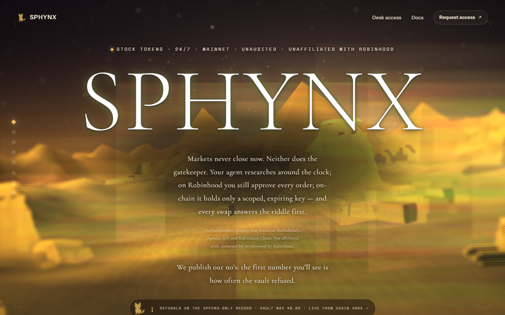

Markets never close now. Neither does the gatekeeper.
A hairless cat in gold pixels sits before a low-poly desert at golden hour, in front of the Great Sphinx. It asks every order a riddle. This document is the reference for anything visual: site, video, social, motion. Every colour, font, mood and frame here is already live on the site.
Two accents only. Gold means allowed, lit, live, yes. Terracotta means refused, veto, danger, sell. Nothing else is coloured. Every surface is a warm brown-black, never neutral grey.
Golden hour from below the horizon. Warm rim light on every edge. Glow, not bloom: 0 0 24px rgba(232,184,90,.22). Sky stays dark with faint stars.
Film grain at 8–12%. Hairlines at 12% cream. Cards 16px radius, one soft shadow. No glass, no neon, no chrome.
90% dark surface · 8% cream text · 2% gold. Terracotta appears only when something is refused.
22×24 cells, 3px gap, 3px corner radius, drawn bottom-up like a terminal booting. Eyes are deep sand, never black. It sits; it never walks, never talks, never emotes beyond the eyes. It is the gatekeeper, not a pet.
Default. Full gold, soft glow.
Cells light row by row from the paws. Unlit cells stay at 14%.
Glow expands, eyes go pale sand. Hold 300ms.
Whole cat flips terracotta for 600ms, then back. Eyes stay deep sand.
Keep it small and still. Let the glow do the acting. Place it at the start of a data line like a prompt cursor. Pair it with the pixel label, never with body text.
No smoothing, no 3D, no fur, no outline, no gradient inside the cells, no rotation, no walking cycle, no speech bubble. Never white, never black. Never a real cat photo.
The hero is a low-poly diorama: faceted dunes, a Great Sphinx silhouette, pyramids as background triangles, a lake that reflects gold. Sky is night, horizon is golden hour. Camera drifts slowly; nothing ever cuts fast. Birds in silhouette, fog trails, drifting smoke. The market never closes, so it is always dusk.
Low-poly, flat-shaded, 200–800 tris per dune. Warm rim light. No textures except grain.
ref: public/experience/SC_01_* · SC_02_P*Stars at 35% opacity, fog trails drifting left, birds crossing once every 8–12 s.
ref: BIRD_ALPHA · fog_flow · TRAILS · SMOKEThe lake mirrors the sky in gold. Horizon sits at 58% of frame height in every wide shot.
ref: SC_03_LAKE_TEXTURE · FLOW
This is the mood target. Everything in the video should feel like a camera move inside this frame: the same dunes, the same gold band, the same sphinx, the same serif title. Use it as the first image reference in every Higgsfield clip.
Slow dolly-in or lateral drift, 2–4% over 6 s. Wide 24mm feel. Never handheld. One move per shot.
Everything eases: cubic-bezier(.16,1,.3,1). Text reveals letter by letter (scramble → settle). Cards rise 10px and fade. Nothing bounces.
Low desert wind, distant reverb. A single soft click on each refusal. No music stings, no whoosh.
Wide. Night sky, golden horizon, sphinx silhouette. Slow dolly-in. Stars fade up.
VO: "Markets never close now."Cut to black. The cat lights up bottom-up, row by row, 1.2 s. Eyes last. Glow blooms.
VO: "Neither does the gatekeeper."The trade terminal. Amount types itself in. Stop slider moves. Quote appears.
VO: "Every order answers the riddle first."Verdict card flips terracotta. Cat flashes terracotta 600 ms. One soft click. Budget counter does not move.
VO: "A refused order spends nothing."Amount shrinks to 150. Verdict goes gold. Sign button lights. Tx hash scrolls. NAV ticks.
VO: "Rules carved on chain, before it trades."Back to the wide. Title rises from the horizon in serif. URL in pixel label. Hold.
VO: "We publish our no's." · sphynxagent.xyzImage-to-video: feed the frame from board 06 as the reference image and use the matching prompt. Text-to-video: use the prompt alone with the style block appended. Keep camera moves to one per clip.
Title centered, horizon at 58%. Mascot bottom-left at 44px.
Mascot large and centered, title under it, dunes as backdrop.
Copy bottom-left, terracotta only on the refusal line.
1200×630. Mascot left at 300px, title right in serif 120px, tagline in pixel gold, caveat line in pixel dim. Already live: public/brand/sphynx-og-riddle.png
Pixel label in gold on a 1px cream hairline, left-aligned, 40px from the bottom. Text scrambles in over 400 ms.
Fonts: Cormorant Garamond, Instrument Sans, Space Mono, Press Start 2P (Google Fonts). Textures: public/experience/*.webp. Mascot mask: components/ui/pixel-sphynx.tsx